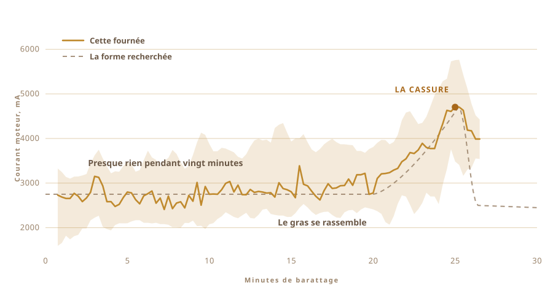

01
Je n'avais jamais fait que le manger
Le ghee que je connais venait des villages. Dans des bocaux récupérés, fait par des gens qui le font de la même façon depuis si longtemps que personne là-bas n'y voit une technique.
Ça n'a pas le goût de celui qu'on achète en boîte.
Et je n'en avais jamais fait une seule fournée. Je ne savais pas combien de temps laisser le lait, ni à quel point le yaourt doit être froid, ni le bruit que la casserole est censée faire quand c'est prêt.
02
Ça commence par du yaourt, pas par de la crème
Le ghee industriel part presque toujours de la crème. La méthode traditionnelle commence un jour plus tôt, ou deux, avec de la crème (en réalité du lait entier réduit) transformée en yaourt et laissée à s'acidifier toute la nuit.
Cette acidification est le point clé. Si on la saute, on obtient du beurre clarifié, très bon par ailleurs, mais pas du ghee.

03
Deux jours sur le plan de travail
Du lait tiède, une cuillerée du yaourt de la veille délayée dedans, et ensuite on le laisse tranquille toute la nuit pendant que les bactéries font leur travail. Le mien, je l'ai laissé dehors deux jours.
C'est la fermentation, et c'est l'étape que la version industrielle saute. Les cultures vivantes, surtout des lactobacilles, digèrent le lactose et le transforment en acide lactique. Le lait épaissit. Il s'acidifie. Au matin, c'est devenu autre chose.
Tout ce qu'il y a de bon là-dedans vient de là. Le lactose est découpé, donc ça passe mieux. Les graisses et les protéines deviennent plus assimilables. Et il y a l'acide butyrique, cet acide gras à chaîne courte dont la paroi de l'intestin se nourrit vraiment, en plus grande quantité dans un ghee fait comme ça que dans un ghee monté à la crème douce.
L'ayurveda prescrit exactement cette version depuis très longtemps.
Ce que je peux dire, moi, c'est que l'odeur vient du ferment, et que cette odeur est à peu près la seule raison valable de se donner tout ce mal.

04
La méthode a un nom
Bilona. Le yaourt dans une casserole, une baratte en bois dedans, et on la fait aller et venir jusqu'à ce que le beurre lâche et remonte.
La baratte, je l'ai faite moi-même. Celles que je trouvais en ligne étaient collées, et personne ne voulait dire avec quelle colle. Ce truc passe une demi-heure dans votre nourriture, donc je n'allais pas deviner. Du bois dur, des vis en inox, boulonné sur un axe d'agitateur que j'avais déjà dans un tiroir.
Quatre bras, et un collier en acier pour les tenir d'aplomb. Tout est vissé, donc ça se démonte.


Ça prend environ une demi-heure, et la plupart du temps il ne se passe rien d'intéressant. Exactement le genre de corvée qu'on se met à rêver de refiler à autre chose.

05
Alors j'ai demandé
Les gens qui savent vraiment faire ça ne suivent pas de recette, et aucun d'eux n'était dans ma cuisine. Les questions sont donc parties dans une fenêtre de chat.
Combien de temps laisser fermenter. À quel point garder le yaourt froid. À quelle vitesse on peut tourner avant que le frottement ne réchauffe la casserole et n'abîme le beurre. Chaque réponse en ouvrait trois autres.
Puis j'ai posé la question que j'avais vraiment en tête. Tu ne pourrais pas le faire, toi ?
La question n'était plus « comment est-ce que je fais du ghee ». C'était devenu « est-ce que tu peux le faire à ma place ».
06
La Bête
Une perceuse sans fil. La baratte, sortie d'un tiroir et d'un magasin de bricolage. Une boîte alimentaire en plastique pour l'électronique, une planche à découper en guise de colonne vertébrale, et un gros bouton d'arrêt jaune, parce que tout ce qui a un moteur devrait en avoir un.
Ça n'a presque rien coûté et ça se voit, ce qui est à peu près l'idée.

- MoteurPerceuse sans fil, serrée dans un serre-joint
- BaratteBois dur et inox, faite et non achetée
- CerveauRaspberry Pi, un relevé par seconde
- SensLe courant du moteur pour le barattage, une sonde de température pour la cuisson
- ArrêtUn gros bouton, câblé pour couper le courant
07
Tourner, c'est la partie facile
N'importe qui peut faire tourner du yaourt. Le difficile, c'est de savoir quand s'arrêter.
Si on arrête trop tôt, on a de la mousse épaisse. Si on continue trop longtemps, on refouette le beurre dans le babeurre et il disparaît. Le bon moment se déplace selon la matière grasse, selon la température, et selon l'humeur de la journée.
Personne ne chronomètre ça. On l'écoute. Le bruit passe d'un remous régulier à un claquement irrégulier, et c'est là qu'on met la main dedans.

08
Un seul sens, et rien d'autre
Je lui ai donc donné un seul sens. Elle surveille la force que le moteur doit fournir.
Pendant vingt minutes, rien. La charge reste autour de 2700 mA et vagabonde un peu. Puis la matière grasse commence à se rassembler et la perceuse doit pousser dans quelque chose de plus épais. Ça monte jusqu'à 4700, ça tient un instant là-haut, et puis le beurre lâche le liquide et la charge retombe.
Pas de caméra, pas de modèle, rien d'astucieux. Un nombre qui monte, puis qui redescend.

09
Elle s'est arrêtée toute seule
Ça a tourné. Je suis allé faire autre chose, et quand je suis revenu elle s'était éteinte.
Des grains jaune pâle posés dans du babeurre trouble. Personne ne lui avait donné l'heure. Elle l'a trouvée avec la seule chose qu'elle sait sentir.

10
Ensuite ça redevient manuel
Ramasser les grains et les presser en boule. Rincer à l'eau froide, encore et encore, jusqu'à ce que l'eau ressorte claire.
Chaque goutte de babeurre qui reste va brûler à l'étape suivante. Cette partie, je ne l'ai pas automatisée, et je n'en avais pas envie.


11
Le deuxième sens
La charge du moteur a dit à la Bête quand s'arrêter. La cuisson est un autre problème, parce qu'on ne cherche plus un instant, on essaie d'en tenir un.
La casserole va donc sur une plaque chauffante, avec une sonde de température dedans et un régulateur secteur qui allume et coupe la plaque pour garder le nombre là où on l'a mis. J'ai réglé sur 250 F et c'est resté là pendant à peu près une heure.
Un humain qui surveille une casserole pendant une heure finit par décrocher. Le régulateur ne s'ennuie pas.

12
Une heure à regarder la couleur
Le beurre dans la casserole, et ensuite ça se fait à peu près tout seul.
Il fond. Il mousse, blanc et bruyant. L'eau s'évapore et le bruit s'éteint. Les particules de lait tombent au fond et brunissent, et l'odeur passe du beurre à quelque chose de grillé. Quand la casserole devient silencieuse et que le liquide est limpide, c'est fini.
J'ai quand même regardé presque tout, parce que c'est beau à voir. Mais rien de ce que j'ai fait n'a changé le résultat.


13
Le ghee
Limpide, ambré, et l'odeur est celle des bocaux dans lesquels j'ai mangé en grandissant. C'était le seul test dont je disposais, et il l'a réussi.

Il est parti en bocaux chaud et limpide. Le lendemain il avait figé, pâle et granuleux.
Je leur ai mis une étiquette. Le mot dessus, c'est ghee en népalais, et le code à côté vous ramène sur cette page.

Première fournée de ma vie. Et je ne l'ai pas vraiment faite.
14
Neuf bocaux la deuxième fois
La première fournée a donné deux bocaux, et c'était tout. Celle-ci a rempli la rambarde.
Neuf bocaux. Deux grands à couvercle vissé juste devant l'objectif, six à fermeture à clip au milieu, et un petit tout au fond près du poteau.

L'étiquette a changé. Les deux premiers bocaux en portaient une en papier rose, avec OUR STORY imprimé en haut. Celles-ci sont en film transparent, donc le ghee se voit derrière les lettres, et le code à côté vous ramène toujours sur cette page.


Ça a figé du même jaune pâle que la première fois, ce dont je n'étais pas sûr du tout.
15
Ce que je veux ensuite
Pour l'instant la machine sait deux choses. Quand arrêter de baratter, et quelle température tenir.
Ensuite j'aimerais lui donner des yeux et des oreilles. Une caméra, pour qu'elle voie la mousse retomber et les particules brunir, et qu'elle choisisse elle-même la chaleur au lieu de tenir un nombre que je lui ai donné. Et un micro, parce que ce qui vous dit que le ghee est prêt, c'est en bonne partie la casserole qui se tait.
La perceuse pourrait sans doute prendre un deuxième service. Une fois le beurre dans la casserole il faut remuer, et il y a déjà un moteur juste là qui ne fait rien.
Et puis la boucle. Changer le temps de fermentation, changer la vitesse, goûter ce qui sort, garder ce qui a marché, recommencer. Trente fournées et ça atterrirait quelque part où je n'aurais pas pensé à chercher.
De toute façon je n'ai jamais vraiment su où chercher.
De quoi elle est faite, où se passe la mesure, et ce que l'engin surveille vraiment.